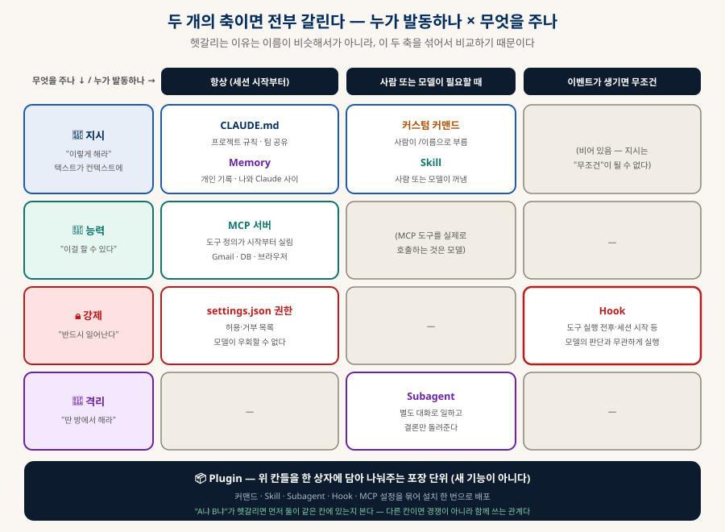
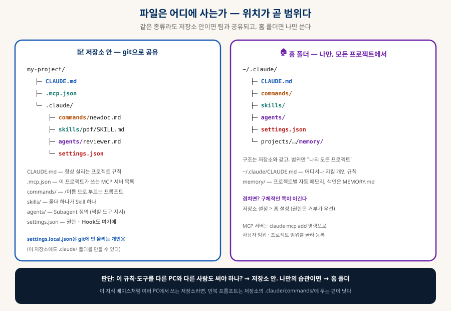
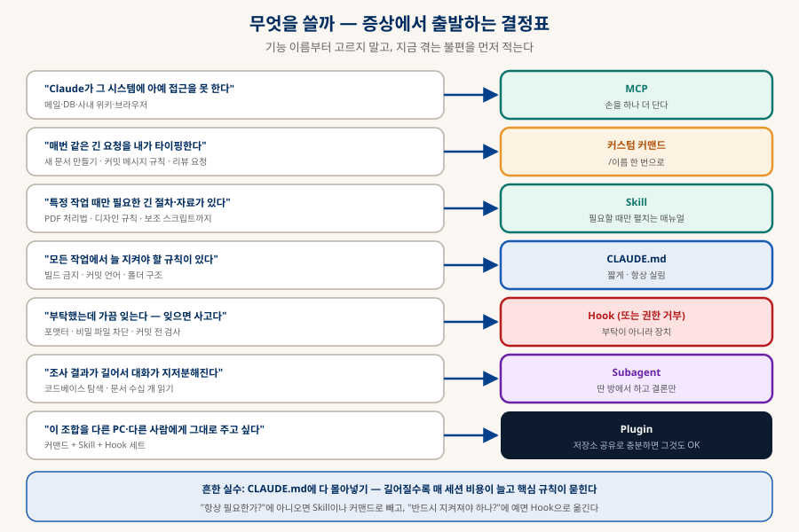

클로드 기능 헷갈림 사전
CLAUDE.md · Skill · 커맨드 · MCP · Subagent · Hook · Plugin · Memory
기능마다 설명을 읽으면 다 이해되는데, 막상 "이건 Skill로 할까 MCP로 할까"를 정하려면 막힌다. 이 문서는 기능을 하나씩 설명하지 않고 짝으로 가른다. 두 개의 축으로 지도를 그리고, 헷갈리는 열 쌍을 판단 기준 한 줄씩으로 정리하고, 마지막에는 "지금 겪는 불편"에서 출발하는 결정표로 닫는다.
0. 한눈에 보기 — 여덟 부품, 한 문장씩
급한 사람을 위한 요약
| 부품 | 비유 | 한 문장 |
|---|---|---|
| CLAUDE.md | 사무실 벽의 규칙표 | 항상 실리는 프로젝트 규칙. 짧을수록 좋다 |
| Skill | 서랍 속 매뉴얼 | 필요할 때만 펼치는 절차와 자료. 평소엔 제목만 보인다 |
| 커스텀 커맨드 | 단축 버튼 | 내가 매번 치는 프롬프트를 /이름 하나로 |
| MCP | 새로 단 손 | 접근할 수 없던 시스템에 닿게 해주는 연결 규격 |
| Subagent | 딴 방의 동료 | 별도 대화에서 일하고 결론만 돌려준다 |
| Hook | 자동 차단기 | 이벤트가 생기면 모델 판단과 무관하게 무조건 실행 |
| Plugin | 택배 상자 | 위 부품들을 묶어 나눠주는 포장 단위. 새 기능이 아니다 |
| Memory | 개인 수첩 | 나와 Claude 사이에서만 쓰이는 기록. 팀 규칙은 CLAUDE.md로 |
0-1. 이 문서의 개념 그래프 — 노드를 눌러 관계를 따라가기 (인터랙티브)
이 문서에 나오는 개념들을 노드로, 이름 붙은 관계를 선으로 그렸다. 노드를 누르면 이웃만 밝아지고 관계 이름이 선 위에 나타나며, 아래 칸에 한 줄 정의와 해당 절로 가는 링크가 뜬다. 확대·축소·끌기도 된다.
1. 두 축의 지도 — 누가 발동하나 × 무엇을 주나
같은 칸이면 선택, 다른 칸이면 조합

2. 언제 실리나 — 컨텍스트라는 한정된 책상
같은 내용이라도 어디에 두느냐에 따라 비용이 다르다
모델이 한 번에 볼 수 있는 분량(컨텍스트)은 정해져 있다. 그래서 부품을 고를 때 진짜 질문은 "이 내용이 언제 책상 위에 올라오나"다. 처음부터 올라와 있는 것은 매 세션 자리를 차지하고, 필요할 때만 펼치는 것은 평소엔 거의 비용이 없다.
| 부품 | 언제 실리나 | 비용 감각 |
|---|---|---|
| CLAUDE.md | 세션 시작부터 전문 | 매 세션 고정비. 길어질수록 핵심이 묻힌다 |
| MCP 도구 | 세션 시작부터 도구 정의 | 서버를 많이 붙이면 정의만으로 무거워진다. 필요할 때 불러오는 방식도 쓰인다 |
| Skill | 시작엔 이름·한 줄 설명만, 쓸 때 본문 | 평소 거의 공짜. 긴 절차를 두기에 가장 싼 자리 |
| 커맨드 | 내가 /이름을 칠 때만 | 안 쓰면 0 |
| Subagent | 별도 창에 실린다 | 본 대화에는 결론 몇 줄만 돌아온다 — 오히려 책상을 비워준다 |
| Hook | 실리지 않는다 | 모델 밖에서 돈다. 출력이 있으면 그것만 들어온다 |
2-1. 세션 한 번의 적재 — 책상이 차오르는 순서 (동적)
3. 헷갈리는 짝 열 쌍 — 판단 기준 한 줄씩
"A냐 B냐"가 떠오르면 이 표에서 찾는다
| 짝 | 가르는 기준 | 이 저장소의 예 |
|---|---|---|
| Skill vs MCP | 방법을 주나, 능력을 주나. 못 하면 MCP, 엉뚱하게 하면 Skill | Gmail에 접근 못 함 → MCP. 메일 요약 형식이 매번 다름 → Skill |
| CLAUDE.md vs Skill | 항상 필요하면 CLAUDE.md, 특정 작업 때만이면 Skill | "빌드 금지"는 CLAUDE.md. "SVG 대비 검사 절차"는 Skill감 |
| Skill vs 커맨드 | 누가 부르나. 커맨드는 사람만, Skill은 모델도 스스로 꺼낼 수 있다 | "새 문서 만들어"를 매번 친다 → 커맨드 |
| Skill vs Subagent | 같은 방에 지식을 더하나, 딴 방에 일을 맡기나 | 34개 문서의 개념 그래프 작성 → Subagent 7명에게 분담 |
| Hook vs CLAUDE.md 규칙 | 부탁이냐 장치냐. 잊으면 사고인 것은 Hook | "작업 전 git pull"은 규칙으로 충분, "비밀 폴더 커밋 금지"는 장치가 낫다 |
| Hook vs 권한(settings) | 권한은 허용·거부, Hook은 무언가를 실행 | 특정 명령 금지 → 권한. 저장 후 검사 실행 → Hook |
| MCP vs API | API는 서비스마다 다른 창구, MCP는 AI용 공통 콘센트 | 같은 Claude가 Gmail·캘린더·드라이브를 같은 방식으로 쓰는 이유 |
| Memory vs CLAUDE.md | 팀·다른 PC도 알아야 하면 CLAUDE.md, 나만의 맥락이면 Memory | "여러 PC에서 작업" 사실은 Memory에, 그에 따른 워크플로는 CLAUDE.md에 |
| Plugin vs 나머지 | Plugin은 기능이 아니라 포장. 안에 뭐가 들었나를 본다 | 혼자·한 저장소면 굳이 필요 없다 — 저장소 공유로 충분 |
| Subagent vs 워크플로 | 한 명에게 맡기나, 여러 명을 코드로 지휘하나 | 탐색 한 건 → Subagent. 문서 34개 일괄 검증 → 워크플로 (「AI 오케스트레이션」) |
4. 부탁 vs 장치 — Hook이 따로 있는 이유
글로 적은 규칙은 아무리 강조해도 부탁이다
CLAUDE.md에 "반드시", "절대"를 굵게 써도 그것은 모델이 읽고 따르는 지시다. 대화가 길어지거나 다른 일에 몰두하면 놓칠 수 있다. Hook은 다르다. "파일을 쓴 직후", "명령을 실행하기 직전", "세션이 끝날 때" 같은 이벤트에 붙은 스크립트라서 모델이 기억하든 말든 실행된다. 스크립트가 거부를 돌려주면 그 동작 자체가 막힌다.
4-1. 잊는 부탁, 안 잊는 장치 (동적)
| 이벤트 (대표) | 언제 | 쓰임새 |
|---|---|---|
| PreToolUse | 도구를 실행하기 직전 | 위험한 명령·비밀 파일 접근 차단 |
| PostToolUse | 도구 실행 직후 | 파일 저장 후 포맷터·검사기 실행 |
| UserPromptSubmit | 내가 메시지를 보낼 때 | 매번 붙일 맥락 주입 |
| SessionStart | 세션이 열릴 때 | git pull·상태 점검 같은 시작 의식 |
| Stop | Claude가 응답을 끝낼 때 | 마무리 검사·알림 |
이벤트 이름과 종류는 버전마다 늘어나니 정확한 목록은 공식 문서를 확인한다 (개략). 설정은 settings.json의 hooks 항목에 적는다.
5. 파일은 어디에 사는가 — 위치가 곧 범위
저장소 안이면 함께, 홈 폴더면 나만

6. 커스텀 커맨드 실전 — 자주 치는 프롬프트를 파일로
가장 먼저 효과를 보는 부품
마크다운 파일 하나가 커맨드 하나다. .claude/commands/newdoc.md를 만들면 /newdoc이 생긴다. 파일 내용이 그대로 프롬프트가 되고, 위쪽 머리말(frontmatter)로 설명과 인자 힌트를 붙인다:
--- description: 새 지식 문서 만들기 (CLAUDE.md 워크플로 전 단계) argument-hint: <주제> --- "$ARGUMENTS" 주제로 새 문서를 만들어줘. CLAUDE.md의 "새 문서 추가" 단계를 빠짐없이 지키고, 정적 도식 3종 + 동적 도식 2종 + §0 개념 그래프를 넣어줘. 최근 커밋 참고: !`git log --oneline -5` 문서 목록 참고: @docs.json 끝나면 헤드리스 렌더로 라이트·다크 둘 다 확인하고 push해줘.
| 장치 | 하는 일 |
|---|---|
| $ARGUMENTS | 커맨드 뒤에 적은 말 전체. $1, $2로 하나씩 받을 수도 있다 |
| description | /를 쳤을 때 목록에 뜨는 설명 |
| argument-hint | 인자 자리에 회색으로 뜨는 안내 |
| !`명령` | 셸 명령을 먼저 돌리고 그 출력을 프롬프트에 끼워 넣는다 |
| @파일 | 그 파일 내용을 함께 붙인다 |
| allowed-tools | 이 커맨드에서 쓸 수 있는 도구를 제한한다 |
A이 저장소에 어울리는 커맨드 후보
| 커맨드 | 담을 내용 |
|---|---|
| /newdoc 주제 | 새 문서 워크플로 전체 — 복제·docs.json·noscript·개념 그래프·상호 링크·검증·push |
| /enrich 문서id | 기존 문서에 도식·동적 도식·표 보강 제안 후 반영 |
| /darkcheck 문서id | 라이트·다크 렌더 + SVG 대비 검사 |
| /graph | build-graph.py 실행 후 고립 노드·미해결 언급 보고 |
7. 결정표 — 기능 이름이 아니라 증상에서 출발
지금 겪는 불편을 먼저 적는다

8. 함께 읽기
이 문서에서 갈라지는 길들
| 주제 | 문서 |
|---|---|
| 기능 하나하나의 깊은 설명 | 「클로드 확장하기」 — §2 지시·절차 · §4 MCP · §5 Hooks · §7 비교 |
| 여러 에이전트를 코드로 지휘하기 | 「AI 오케스트레이션」 |
| 하네스가 실제로 도는 방식 | 「Claude Code 내부 해부」 |
| MCP를 로컬 모델에 붙이기 | 「로컬 LLM 에이전트」 |
| 규칙 파일을 쓰는 법 — constitution | 「소프트웨어 요구사항 작성과 관리」 §10 |